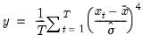
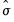
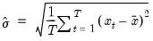
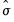
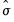

@kurt Basic Statistics Kurtosis. Computes the kurtosis of the elements of x. Syntax: @kurt(x[, s]) x: numeric object s: (optional) sample string or object when x is a series and assigning to a series Return: number The kurtosis is calculated as  where is the sample mean, and  is an estimator for the standard deviation that is based on the biased estimator for the variance  The kurtosis of the normal distribution is 3. If the kurtosis exceeds 3, the distribution is peaked (leptokurtic) relative to the normal; if the kurtosis is less than 3, the distribution is flat (platykurtic) relative to the normal. For series calculations, EViews will use the current or specified workfile sample. Examples If x = @nrnd, then = @kurt(x) returns a value close to 3 in large samples (since the normal distribution has a kurtosis of 3). Cross-references See also @mean, @var, and @skew.


 is the sample mean, and  is an estimator for the standard deviation that is based on the biased estimator for the variance
is the sample mean, and  is an estimator for the standard deviation that is based on the biased estimator for the variance